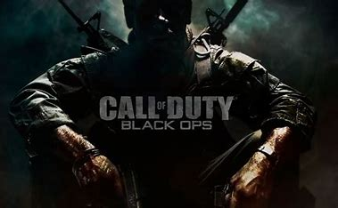
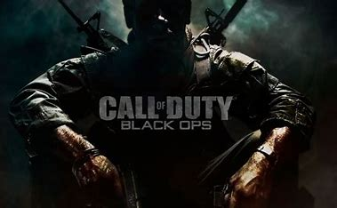
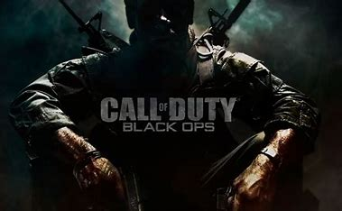

The earliest known video game competition took place on 19 October 1972 at Stanford University for the game Spacewar. Stanford students were invited to an "Intergalactic spacewar olympics" whose grand prize was a year's subscription for Rolling Stone, with Bruce Baumgart winning the five-man-free-for-all tournament and Tovar and Robert E. Maas winning the team competition.[12]
Contemporary esports has roots in competitive face-to-face arcade video game competitions. A forerunner of esports was held by Sega in 1974, the All Japan TV Game Championships, a nationwide arcade video game tournament in Japan.[13][14][15] The tournament was intended by Sega to promote the play and sales of video games in the country. There were local tournaments held in 300 locations across Japan, and then sixteen finalists from across the country competed in the final elimination rounds at Tokyo's Hotel Pacific. Prizes awarded included television sets (color and black-and-white), cassette tape recorders and transistor radios. According to Sega, the tournament "proved to be the biggest event ever" in the arcade game industry, and was attended by members from leading Japanese newspapers and leisure industry companies.There were local tournaments held in 300 locations across Japan, and then sixteen finalists from across the country competed in the final elimination rounds at Tokyo's Hotel Pacific.
Growth and online video games (1990–1999)
The fighting game Street Fighter II (1991) popularized the concept of direct, tournament-level competition between two players.[36] Previously, video games most often relied on high scores to determine the best player, but this changed with Street Fighter II, where players would instead challenge each other directly, "face-to-face," to determine the best player,[36] paving the way for the competitive multiplayer and deathmatch modes found in modern action games.[37] The popularity of fighting games such as Street Fighter and Marvel vs. Capcom in the 1990s led to the foundation of the international Evolution Championship Series (EVO) esports tournament in 1996.
Large esports tournaments in the 1990s include the 1990 Nintendo World Championships, which toured across the United States, and held its finals at Universal Studios Hollywood in California. Nintendo held a 2nd World Championships in 1994 for the Super Nintendo Entertainment System called the Nintendo PowerFest '94. There were 132 finalists that played in the finals in San Diego, California. Mike Iarossi took home 1st prize. Blockbuster Video also ran their own World Game Championships in the early 1990s, co-hosted by GamePro magazine. Citizens from the United States, Canada, the United Kingdom, Australia, and Chile were eligible to compete. Games from the 1994 championships included NBA Jam and Virtua Racing.[38]
Television shows featuring esports during this period include the British shows GamesMaster and Bad Influence!; the Australian game show A*mazing, where in the final round contestants competed in a video game face-off; and the Canadian game show Video & Arcade Top 10.
Classification as a sport
Labeling competitive video games as a sport is a controversial topic.[73][74][75] Proponents[76] argue that esports are a fast-growing "non-traditional sport" which requires "careful planning, precise timing, and skillful execution".[77] Others claim that sports involve physical fitness and physical training, and prefer to classify esports as a mind sport.[78]
Former ESPN president John Skipper described esports in 2014 as a competition and "not a sport".[79][80][81][82][83][84] In 2013 on an episode of Real Sports with Bryant Gumbel the panelist openly laughed at the topic.[85] In addition, many in the fighting games community maintain a distinction between their competitive gaming competitions and the more commercially connected esports competitions of other genres.[86] In the 2015 World Championship hosted by the International Esports Federation, an esports panel of guests from international sports society discussed the future recognition of esports as a legitimate sport.[87]
Russia was the first country that classified "cybersport" as an official sport discipline[88] on 25 July 2001.[89] After a series of reforms in Russian sports, it was classified as a sport again on 12 March 2004.[89][90][91][92] In July 2006, it was removed from a list of sport disciplines because it did not fit the new sport standards.[93][94] On 7 July 2016, The Ministry of Sport decided to add cybersport the into sport registry[95] and on 13 April 2017, esports become an official sport discipline once again.[citation needed]
China was another one of the first countries to recognize esports as a real sport in 2003,[96] despite concerns at the time that video games were addictive. Through this, the government encouraged esports, stating that by participating in esports, players were also "training the body for China".[97] Furthermore, by early 2019, China recognized esports players as an official profession within the Ministry of Human Resources and Social Security's Occupation Skill Testing Authority recommendations, as well as professional gaming operators, those that distribute and manage esports games.[98] By July 2019, more than 100,000 people had registered themselves as professional gamers under this, with the Ministry stating that they anticipate over 2 million such people in this profession in five years.[99]
In 2013, Canadian League of Legends player Danny "Shiphtur" Le became the first pro gamer to receive an American P-1A visa, a category designated for "Internationally Recognized Athletes".[100][101] In 2014, Turkey's Ministry of Youth and Sports started issuing esports licenses to players certified as professionals.[102][103] In 2016, the French government started working on a project to regulate and recognize esports.[104] The Games and Amusements Board of the Philippines started issuing athletic licenses to Filipino esports players who are vouched for by a professional esports team in July 2017.[105][106]
To help promote esports as a legitimate sport, several esports events have been run alongside more traditional international sports competitions. The 2007 Asian Indoor Games was the first notable multi-sport competition including esports as an official medal-winning event, alongside other traditional sports, and the later editions of the Asian Indoor Games, as well as its successor the Asian Indoor and Martial Arts Games, have always included esports as an official medal event or an exhibition event up to now. Moreover, the Asian Games, which is the Asian top-level multi-sport competition, will also include esports as a medal event at the 2022 edition; esports around games such as Hearthstone, Starcraft II, and League of Legends were presented as an exhibition event at the 2018 Asian Games as a lead-in to the 2022 games.[107][108] The 2019 Southeast Asian Games included six medal events for esports.[109] Since 2018, World Sailing has held an eSailing World Championship that showed a main sports federation embracing esports.[110] The Virtual Regatta race shadowing the 2020-2021 Vendee Globe was the first online game believe to have in excess of 1,000,000 unique users[111]
Ahead of The International 2021, which was originally set to take place in Stockholm in 2020, the Swedish Sports Confederation voted in June 2021 to deny recognition of esports as a sporting event, which jeopardized plans for how Valve had arranged the event in regards to travel visas for international players. Valve had tried to work with Sweden to accommodate players, but eventually rescheduled the event to Romania instead.[112][113]
The 2022 Commonwealth Games will feature esports competitions as a pilot ahead of being a potential full medal event for 2026.[114]
In Greece, in March 2022 a law entered into force recognising and regulating esports[115] and in June 2023, the relevant federation for esports has been officially given recognition[116] and included in the list of sports federations.[117]
Olympic Games recognition
The Olympic Games are also seen as a potential method to legitimize esports. A summit held by the International Olympic Committee (IOC) in October 2017 acknowledged the growing popularity of esports, concluding that "Competitive 'esports' could be considered as a sporting activity, and the players involved prepare and train with an intensity which may be comparable to athletes in traditional sports" but would require any games used for the Olympics fitting "with the rules and regulations of the Olympic movement".[118] Another article by Andy Stout suggests that 106 million people viewed the 2017 Worlds Esports competition.[119] International Olympic Committee (IOC) president Thomas Bach has noted that the IOC is troubled by violent games and the lack of a global sanctioning body for esports.[120][108] Bach acknowledged that many Olympic sports bore out from actual violent combat, but stated that "sport is the civilized expression about this. If you have egames where it's about killing somebody, this cannot be brought into line with our Olympic values."[108] Due to that, the IOC suggested that they would approve more of esports centered around games that simulate real sports, such as the NBA 2K or FIFA series.[121]
The issues around esports have not prevented the IOC from exploring what possibilities there are for incorporation into future Olympics. During July 2018, the IOC and the Global Association of International Sports Federations (GAISF) held a symposium and inviting major figures in esports, including Epic Games' Mark Rein, Blizzard Entertainment's Mike Morhaime, and esports players Dario "TLO" Wünsch, Jacob "Jake" Lyon, and Se-yeon "Geguri" Kim, for these organizations "to gain a deeper understanding of esports, their impact and likely future development, so that [they] can jointly consider the ways in which [they] may collaborate to the mutual benefit of all of sport in the years ahead".[122][123] The IOC has tested the potential for esports through exhibition games. With support of the IOC, Intel sponsored exhibition esports events for StarCraft II and Steep prior to the 2018 Winter Olympics in Pyeongchang, and five South Korean esports players were part of the Olympic Torch relay.[124][125] A similar exhibition showcase, the eGames, was held alongside the 2016 Summer Olympics in Rio de Janeiro, though this was not supported by the IOC.
During the Eighth Olympic Summit in December 2019, the IOC reiterated that it would only consider sports-simulating games for any official Olympic event, but it would look at two paths for such games in the future: those that promoted good physical and mental health lifestyles, and virtual reality and augmented reality games that included physical activity.[126]
In the late 2010s, leaders in Japan became involved to help bring esports to the 2020 Summer Olympics and beyond, given the country's reputation as a major video game industry center. Esports in Japan had not flourished due to the country's anti-gambling laws that also prevent paid professional gaming tournaments, but there were efforts starting in late 2017 to eliminate this issue.[6] At the suggestion of the Tokyo Olympic Games Committee for the 2020 Summer Olympics, four esports organizations have worked with Japan's leading consumer organization to exempt esports tournaments from gambling law restrictions. Takeo Kawamura, a member of the Japanese House of Representatives and of the ruling Liberal Democratic Party, led a collation of ruling and opposing politicians to support esports, called the Japan esports Union, or JeSU;[127] Kawamura said that they would be willing to pass laws to further exempt esports as needed so that esports athletes can make a living playing these sports. So far, this has resulted in the ability of esports players to obtain exemption licenses to allow them to play, a similar mechanism needed for professional athletes in other sports in Japan to play professionally.[6] The first such licenses were given out in mid-July 2018, via a tournament held by several video game publishers to award prizes to many players but with JeSU offered these exemption licenses to the top dozen or so players that emerge, allowing them to compete in further esports events.[127] The Tokyo Olympic Committee has also planned to arrange a number of esports events to lead up into the 2020 games.[6] With the IOC, five esports events were set as part of an Olympic Virtual Series from May 13 to June 23, 2021, ahead of the games. Each event in auto racing, baseball, cycling, rowing and sailing will be managed by an IOC-recognized governing body for the sport along with a video game publisher of a game for that sport. For example, the auto racing event will be based on the Gran Turismo series and overseen by the International Automobile Federation along with Polyphony Digital. The baseball, cycling, and esailing events will be based on eBaseball Powerful Pro Baseball 2020, Zwift, and Virtual Regatta, respectively.[128]
The organization committee for the 2024 Summer Olympics in Paris were in discussions with the IOC and the various professional esports organizations to consider esports for the event, citing the need to include these elements to keep the Olympics relevant to younger generations.[129] Ultimately, the organization committee determined esports were premature to bring to the 2024 Games as medal events, but have not ruled out other activities related to esports during the Games.[130]
In September 2021, the Olympic Council of Asia announced eight esports games will officially debut as medal sports for the 2022 Asian Games in HangZhou, China.[131]
In December 2021, the IOC confirmed its Olympic Virtual Series (OVS) will return in 2022. The first edition of the OVS which ran from 13 May to 23 June, featured nearly 250,000 participants and had more than two million entries.[132]
In January 2022, the IOC announced the appointment of the organisation's first ever head of virtual sport, tasked with the development of virtual sport for the global Olympic body, increasing the organisation's engagement with gaming communities, and overseeing the Olympic Virtual Series, IOC's first licensed non-physical sports event. The inaugural series included virtual baseball, cycling, rowing, esailing and motorsports events.[133]
In February 2022, the Commonwealth Games Federation announced that esports would be included in the 2022 Commonwealth Games as a pilot event, with the possibility of it being a medal event in the 2026 Games.[134] The inaugural Commonwealth Esports Championship had separate branding, medals, and organisation and included both men and women's Dota 2, eFootball, and Rocket League events.[135]
As a follow-up to 2021's Olympic Virtual Series, the IOC and the Singapore National Olympic Council held the inaugural Olympic Esports Week in Singapore in June 2023.[136] Games featured at the event included:[137][138]
Tic Tac Bow (archery)
WBSC eBaseball: Power Pros (baseball)
Chess.com (chess)
Zwift (cycling)
Just Dance (dancing)
Gran Turismo (motor sport)
Virtual Regatta (esailing)
Fortnite (sharpshooting)
Virtual Taekwondo (taekwondo)
Tennis Clash (tennis)
Games
A number of games are popular among professional competitors. The tournaments which emerged in the mid-1990s coincided with the popularity of fighting games and first-person shooters, genres which still maintain a devoted fan base. In the 2000s, real-time strategy games became overwhelmingly popular in South Korean internet cafés, with crucial influence on the development of esports worldwide. Competitions exist for many titles and genres, though the most popular games[citation needed] as of the early 2020s are Counter-Strike: Global Offensive, Call of Duty, League of Legends, Dota 2, Fortnite, Rocket League, Valorant, Hearthstone, Super Smash Bros. Melee, StarCraft II and Overwatch.[139] Hearthstone has also popularized the digital collectible card game (DCCG) genre since its release in 2014.[140]

Video game design
While it is common for video games to be designed with the experience of the player in game being the only priority, many successful esports games have been designed to be played professionally from the beginning. Developers may decide to add dedicated esports features, or even make design compromises to support high level competition. Games such as StarCraft II,[141] League of Legends,[142] and Dota 2[143] have all been designed, at least in part, to support professional competition.
Spectator mode
In addition to allowing players to participate in a given game, many game developers have added dedicated observing features for the benefit of spectators. This can range from simply allowing players to watch the game unfold from the competing player's point of view, to a highly modified interface that gives spectators access to information even the players may not have. The state of the game viewed through this mode may tend to be delayed by a certain amount of time in order to prevent either teams in a game from gaining a competitive advantage. Games with these features include Counter-Strike: Global Offensive, Call of Duty,[144] StarCraft II,[145][146] Dota 2,[147] and Counter-Strike.[148] League of Legends includes spectator features, which are restricted to custom game modes.[149][150]
In response to the release of virtual reality headsets in 2016, some games, such as Dota 2, were updated to include virtual reality spectating support.[151]
Online
A very common method for connection is the Internet. Game servers are often separated by region, but high quality connections allow players to set up real-time connections across the world. Downsides to online connections include increased difficulty detecting cheating compared to physical events, and greater network latency, which can negatively impact players' performance, especially at high levels of competition. Many competitions take place online, especially for smaller tournaments and exhibition games.
Since the 1990s, professional teams or organized clans have set up matches via Internet Relay Chat networks such as QuakeNet. As esports have developed, it has also become common for players to use automated matchmaking clients built into the games themselves. This was popularized by the 1996 release of Blizzard's Battle.net, which has been integrated into both the Warcraft and StarCraft series. Automated matchmaking has become commonplace in console gaming as well, with services such as Xbox Live and the PlayStation Network. After competitors have contacted each other, the game is often managed by a game server, either remotely to each of the competitors, or running on one of the competitor's machines.
Players and teams
Professional gamers are often associated with esports teams or broader gaming and entertainment organizations. Teams such as FaZe Clan, Cloud9, Fnatic, T1, G2 Esports, and Natus Vincere have become successful within esports and now sponsor esports players around the world.[155][156] These teams often cover multiple esports games within tournaments and leagues, with various team makeups for each game. They may also represent single players for one-on-one esports games like fighting games within Evolution Championship Series, or Hearthstone tournaments. In addition to prize money from tournament wins, players in these teams and associations may also be paid a separate team salary. Team sponsorship may cover tournament travel expenses or gaming hardware. Prominent esports sponsors include companies such as Logitech and Razer.[157] Teams feature these sponsors on their website, team jerseys[158] and on their social media, in 2016 the biggest teams have social media followings of over a million.[159] Associations include the Korean e-Sports Association (KeSPA), the International e-Sports Federation (IeSF), the British esports Association, and the World esports Association (WESA).
Some traditional sporting athletes have invested in esports, such as Rick Fox's ownership of Echo Fox,[160] Jeremy Lin's ownership of Team VGJ,[161] and Shaquille O'Neal's investment in NRG Esports.[162] Some association football teams, such as FC Schalke 04 in Germany,[163] Paris Saint-Germain esports in France;[164] Besiktas JK, Fenerbahce S.K., and Galatasaray in Turkey; Panathinaikos F.C. in Greece either sponsor or have complete ownership in esports teams.[165]
Competitive Esports tournaments in the most popular games pay hundreds to thousands of dollars to players for winning tournaments.[166] Dota 2's 2021 tournament The International had a prize pool over $40 million and is projected to keep growing. Counter-Strike: Global Offensive had a 2021 prize pool of around $22 million.[167] However, financial security in the industry is largely limited to players in top performing teams. One study found that only 1 in 5 professional gamers have careers that last longer than two years.[168] Team rosters are extremely volatile, sometimes changing players or rosters within a season.[169]
While different from the regimens of traditional sports, esports athletes still have extensive training routines. Team Liquid, a professional League of Legends team, practice for a minimum of 50 hours per week and most play the game far more.[170] In April 2020, researchers from the Queensland University of Technology found that some of the top esports players showed similar aspects of mental toughness as Olympic athletes.[171][172] This training schedule for players has resulted in many of them retiring an early age. Players are generally in competition by their mid- to late-teens, with most retiring by their late-20s.[173]
Tournaments
Esports are also frequently played in tournaments, where potential players and teams vie to be placed through qualification matches before entering the tournament. From there, the tournament formats can vary from single or double elimination, sometimes hybridized with group stage.[180] Esports tournaments are almost always physical events in which occur in front of a live audience, with referees or officials to monitor for cheating. The tournament may be part of a larger gathering, such as Dreamhack, or the competition may be the entirety of the event, like the World Cyber Games or the Fortnite World Cup. Esports competitions have also become a popular feature at gaming and multi-genre conventions.[citation needed]
Although competitions involving video games have long existed, esports underwent a significant transition in the late 1990s. Beginning with the Cyberathlete Professional League in 1997, tournaments became much larger, and corporate sponsorship became more common. Increasing viewership both in person and online brought esports to a wider audience.[3][181] Major tournaments include the World Cyber Games, the North American Major League Gaming league, the France-based Electronic Sports World Cup, and the World e-Sports Games held in Hangzhou, China.
The average compensation for professional esports players does not compare to those of the top classical sports organizations in the world. According to Julian Krinsky Camps & Programs website, the top Esports player in the world earned around $2.5 million in 2017.[182][better source needed] The highest overall salary by any esports professional at the time was around $3.6 million. While prizes for esports competitions can be very large, the limited number of competitions and large number of competitors ultimately lowers the amount of money one can make in the industry. In the United States, Esports competitions have prizes that can reach $200,000 for a single victory. Dota 2 International hosted a competition where the grand-prize winning team walked home with almost $10.9 million.[182]
For well established games, total prize money can amount to millions of U.S. dollars a year.[183][184] As of 10 September 2016, Dota 2 has awarded approximately US$86 million in prize money within 632 registered tournaments, with 23 players winning over $1 million. League of Legends awarded approximately $30 million within 1749 registered tournaments, but in addition to the prize money, Riot Games provides salaries for players within their League of Legends Championship Series.[185] Nonetheless, there has been criticism to how these salaries are distributed, since most players earn a fairly low wage but a few top players have a significantly higher salary, skewing the average earning per player.[186] In August 2018, The International 2018, Valve's annual premier Dota 2 tournament, was held and broke the record for holding the largest prize pool to date for any esports tournament, amounting to over US$25 million.[187]
Often, game developers provide prize money for tournament competition directly,[183] but sponsorship may also come from third parties, typically companies selling computer hardware, energy drinks, or computer software. Generally, hosting a large esports event is not profitable as a stand-alone venture.[188] For example, Riot has stated that their headline League of Legends Championship Series is "a significant investment that we're not making money from".[189]
There is considerable variation and negotiation over the relationship between video game developers and tournament organizers and broadcasters. While the original StarCraft events emerged in South Korea largely independently of Blizzard, the company decided to require organizers and broadcasters to authorize events featuring the sequel StarCraft II.[190] In the short term, this led to a deadlock with the Korean e-Sports Association.[191] An agreement was reached in 2012.[192] Blizzard requires authorization for tournaments with more than US$10,000 in prizes.[193] Riot Games offers in-game rewards to authorized tournaments.[194]
 
